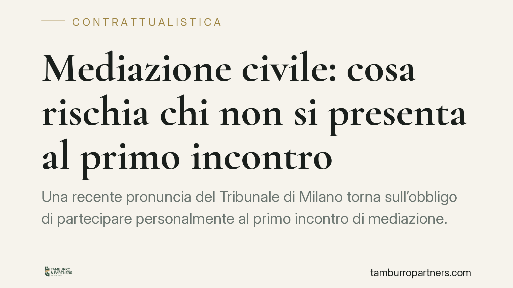

Mediazione civile: cosa rischia chi non si presenta al primo incontro
Una recente pronuncia del Tribunale di Milano torna sull'obbligo di partecipare personalmente al primo incontro di mediazione. Chi diserta senza giustificato motivo rischia sanzioni economiche e conseguenze processuali introdotte dalla Riforma Cartabia. Per la Pubblica amministrazione si aggiunge il rischio di responsabilità erariale davanti alla Corte dei conti. Vediamo cosa cambia in concreto per le parti.

Il caso e perché conta
Il Tribunale di Milano è tornato a chiarire un punto che, nella pratica, viene ancora sottovalutato: la partecipazione al primo incontro di mediazione non è una formalità. È un obbligo, e disertarlo senza un motivo valido produce conseguenze concrete, sia economiche sia processuali.
La mediazione civile è la procedura in cui un terzo imparziale (il mediatore) aiuta le parti a trovare un accordo prima o durante una causa. In alcune materie è "condizione di procedibilità": senza il tentativo di mediazione, la domanda in giudizio non può essere esaminata nel merito.
Inquadramento normativo
La disciplina di riferimento è il D.lgs. 28/2010, profondamente rivisto dal D.lgs. 149/2022 (la cosiddetta Riforma Cartabia). Il fulcro è l'art. 12-bis del dlgs 28/2010, che regola le conseguenze della mancata partecipazione senza giustificato motivo.
La norma prevede due effetti principali. Il primo è processuale: dal comportamento della parte che, senza giustificato motivo, non partecipa alla mediazione, il giudice può trarre "argomenti di prova" nel successivo giudizio (art. 116, secondo comma, c.p.c.). In altri termini, l'assenza ingiustificata può essere valutata a sfavore.
Il secondo effetto è economico. Il giudice condanna la parte assente al versamento all'erario di una somma corrispondente al contributo unificato dovuto per il giudizio. A questo si aggiunge la possibile condanna alle spese di lite anche in caso di vittoria, quando la mancata partecipazione abbia impedito una definizione anticipata della controversia.
La Riforma Cartabia ha inoltre confermato che, di regola, le parti devono partecipare personalmente, assistite dai propri difensori. La delega a terzi è ammessa solo per giustificati motivi e con procura speciale che attribuisca il potere di conciliare.
Implicazioni pratiche
Per chi affronta una controversia, il messaggio è netto: presentarsi al primo incontro è la scelta prudente, anche quando si ritiene la mediazione priva di sbocchi. L'assenza non è neutra e può pesare in causa.
La questione è delicata per le compagnie assicurative e, più in generale, per gli enti che gestiscono un elevato numero di contenziosi. La prassi di non presentarsi, o di delegare senza reali poteri di conciliazione, espone a sanzioni ripetute e a valutazioni sfavorevoli da parte del giudice.
Un capitolo a sé riguarda la Pubblica amministrazione. Quando il funzionario che partecipa non ha poteri di conciliare, o l'ente diserta senza motivo, la sanzione economica versata all'erario può tradursi in un danno per l'amministrazione stessa. Da qui il rischio di responsabilità erariale e di segnalazione alla Corte dei conti, chiamata a valutare l'eventuale danno prodotto da una condotta ingiustificata.
È utile ricordare cosa si intende per "giustificato motivo". Non basta un generico disinteresse o la convinzione di avere ragione. Servono ragioni oggettive e documentabili: un impedimento serio, l'assenza dei presupposti procedurali, situazioni analoghe. La valutazione resta rimessa al giudice.
Cosa fare in concreto
- Partecipate al primo incontro, personalmente o tramite procuratore munito di procura speciale con potere di conciliare. Non limitatevi alla presenza formale del solo difensore.
- Documentate ogni impedimento: se non potete presentarvi, precostituite la prova del giustificato motivo e comunicatelo per tempo all'organismo di mediazione.
- Verificate i poteri del delegato: assicuratevi che chi partecipa possa effettivamente valutare e sottoscrivere un accordo, soprattutto per enti e società.
- Per la PA, definite a monte chi partecipa e con quali poteri, per prevenire sanzioni e profili di responsabilità erariale.
- Valutate la proposta con serietà: anche un incontro concluso senza accordo va gestito con attenzione, perché il comportamento tenuto può riflettersi sul giudizio.
La mediazione, nata come strumento deflattivo, è oggi un passaggio con regole precise. Trattarla come un adempimento da eludere è una strategia che espone a costi certi e vantaggi nulli.
---
*Contributo informativo a cura di Tamburro & Partners - Avv. Giuseppe Tamburro. Non costituisce parere legale.*
Ogni contratto ha il suo equilibrio.
Se vuoi una revisione delle clausole o una redazione su misura, scrivi allo studio. Ti rispondiamo entro un giorno lavorativo.